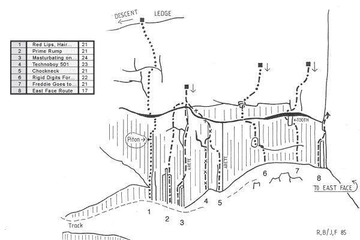
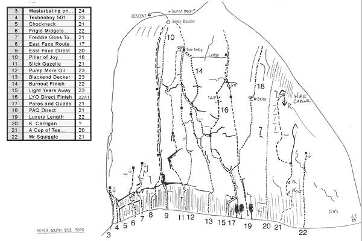

Home > The Guide > Mt Coonowrin > All Routes, Mt Coonowrin
|
Home > The Guide > Mt Coonowrin > All Routes, Mt Coonowrin |
|
NOTE: Climbing is currently banned at this crag!
On the 14th December 1999, the Queensland Parks and Wildlife Service (QPWS) closed to the public the Mt Coonowrin section of the Glasshouse Mountains National Park for an indefinite period. This closure was based on the recommendation of a geological report, "The Coffey Report" which the QPWS had had in their possession since April 12, 1999.
A substantial fine applies if you are caught climbing here.
The information supplied here is included for historical reasons and in the hope that the cliff will be reopened to climbing in the future.
NOTE: The ethics of this crag prohibit using bolts to protect routes. Please respect this and don't bolt Coonowrin! There isn't really room for new routes anyway, as most of the rock has been climbed.
South Face
Climbs are listed from L to R - anticlockwise around the mountain.
Flameout 145m 17
Start: 30m L of where the walking track meets the rock, and 10m L of Clarks Gully. The first pitch is distinguished by a plethora of pitons.
1) 18m Up the groove, then move L and up to below a roof. Follow the shallow groove,
then move L to a small grassy ledge. Belay around the corner to the L.
2) 24m Up diagonally R to below a block. Up and onto the top of the second block and
up under an overhang. Traverse L around a corner and up to a poor stance.
3) 37m Up directly above the stance, then traverse R around a corner and up. Traverse
slightly R, then up on downward-sloping rock. Trend L back above the stance and then
up to a belay.
4 & 5) 66m Finish up the West Face Route to the top.
Donn Groom, Ted Cais 28/11/1966
Clarks Gully - 5
Start: 20m L of Salmons Leap. Marked ‘CG’.
Trend R up black rock steps. The crux is just after the start, but unfortunately it’s made easier by holds that have been chipped in recent times. Continue on up through a bushy gully and out R, along a track, up a small step and then R-ward to join the Salmons Leap track.
FA Jenny, Etty & Sara Clark, Willie Fraser, George Rowley, Jack Sairs 26/05/1912
Salmon's Leap - 3
This is the most popular path to the summit. Starts where the walking track meets the rock on the S side of Coonowrin. Marked ‘SL’. Up grade 1 rock and into a corner. From a two piton belay, traverse L along the ledge and step across the Leap to a good stance. A sling can be placed over the rock at this point and used for a belay. Note: Some climbers traverse along a lower ledge and climb through the Leap. The rest of the climb is quite easy. Scramble up a well worn track with short sections of grade 1 rock. This track trends R until it reaches the E ridge, then continue along the ridge to the summit.
FA A. Clark, W. Fraser (unsubstantiated)
Butterfly - 16 A2
Start: In the centre of the SE face (accurate location unknown).
Free climb up to the ledge at 10m. Aid to beneath the second ledge. Up onto the ledge, then up with one aid and L into exit gully. Possibly a free climb by now.
FA Rob Rankin, Gary Huish, John Parslow 05/05/1973
To get to these routes, carefully follow the track around R. 
Red Lips, Hair And Fingernails
50m 21
Scary, but good. A reasonably direct line passing a suspect PR to roof. Up the wall above to descent ledge. The piton in this route is useful as a landmark to gauge the location of the other routes.
Fred From 1980's
Prime Rump 22m 21
3m R of Red Lips, Hair and Fingernails. Up pillars, then up tending R to roof. Through, traverse R, and up to rap anchor above Masturbating On The Spear Of Destiny.
Roger Bourne 1980's
Starts 2m R of Prime Rump. Start L of pillar to stance, then direct line up arête and straight through overhangs to fixed wire rap anchor in slabby corner. Roger says it's quite safe (by Crookneck standards) if you know how to put in wires.
Roger Bourne, Fred From 1980's
Serious. This is basically a direct start to Chookneck. Start 4m R of Masturbating On The Spear Of Destiny. Join Chookneck at the finger crack, moving L and up to rap anchor above MOTSOD. Rumour has it that on the first ascent, Roger supposedly fell off, hit the deck and rolled down the slope. Before anyone could ask him if he was okay he was back on the route!
Roger Bourne, Fred From 1980's
A classic endurance pump. Start 2m R of Technoboy 501 and just L of arête. Up to stance on pillars, then to break. Traverse L to thin finger crack and up to small roof. Swing L into slot and up to below big roof. Cut L and up through L end of roof system to rap anchor above Masturbating On The Spear Of Destiny. Well protected.
Paul Hoskins 1980's
Rigid Digits For Frigid Midgets 25m 22
Start: About 4m R of Choockneck at far L of little amphitheatre.
Out L to hole, then up through small roof. Up to second roof and keyed block, crux, then up R to rap anchor.
Gordon Bieske, Roger Bourne, Fred From 1980's
A good roof, and one of the more popular routes. 5m R of Rigid Digits for Frigid Midgits at far R of little amphitheatre, with stalactite hanging from roof. Climb up to roof then L to stalactite. Pull through roof, then straight up for 8m to rooflet. R and up for 2m to fixed hex rap anchor. Good gear throughout.
Roger Bourne, Fred From 1980's
East Face 
Unknown 25m 20
Climb East Crookneck for 6m, then head up and L through bulge and up wall to old rap station at approximately 25m.
The very obvious line up the E face which can be spotted from many kilometres away.
1) 25m (crux) Originally graded 16 but a block fell out upping the grade to 18. Now considered solid climbing at 19. Don’t start beneath the wide fissure. Instead, start 4m R of Freddie Goes To Sybils, just R of some short pillars. Up for 10m to stance below rooflet. Over rooflet to rest and pro. Now a balancy and awkward 2-3m traverse R to small crack which leads to beginning of fissure. Bomber gear follows in the crack. Now 3m up to BB on block at beginning of fissure.
2) 35m (18) Straightforward and well-protected climbing up broad fissure. Best climbing is on outside of fissure, don't grovel! Crux is two successive bulges high up in the pitch. Pitch ends at a BB on a good ledge.
3) 20m (15) Up broken rock to bottom of corner which is the crux. Corner can be climbed with good gear or can be ignored in favour of face climbing to the left. Pitch ends with some retrobolts (the original belay is the large boulder). Scramble over mank to the E ridge.
FA Ron Cox, Pat Conaghan, John Comino 19/9/59
FFA Les Wood, Donn Groom 5/66
Start: From the stance at the top of pitch 2 of East Crookneck.
Traverse about 6m R around the arête into a vague corner. Up and R following the LLR. Quite good jamming in parts.
Fred From, Rob Rankin 04/1976
East Crookneck DS - 20
Starts directly beneath and climbs through a thrutchy roof at 6m, directly into the wide fissure. A faint epitaph scratched at the beginning of this route reads "Don’t be fucking stupid". Wise words?
Rob Staszewski
Prominent Victorian climber Simon Mentz almost came to grief on the second pitch, taking a 6m fall when a washing machine-sized block was overcome by gravity. It missed the belayer by mere centimetres.
1) 30m (20) Start about 8m R of East Crookneck DS. Up to roof. Through this, then up L into shallow corner. Move R under smooth roof until it is possible to climb through, then up to stance on pillar (belay).
2) 30m (crux) Directly up, L through roof, then back R to gain TB on ledge.
3) 10m (10) Wander up and L to belay boulder above East Crookneck.
Roger Bourne, Evan Bieskie, Fred From, John Fantini 1980's
Pump More Oil
1) 40m (crux) Climb Slick Gazelle to roof. R through this and straight up to a belay.
2) 20m (22) Directly up to a TB.
3) 10m (10) Wander up and L to belay boulder above East Crookneck.
John Fantini 1980's
1) 45m (crux) Directly up, R through roof, then a monster slog up, trending slightly L to belay. 10m off the deck you have to climb onto a giant violet crumble bar (if it's still there).
2) 25m Up L to meet Pump More Oil, then follow it straight up to TB.
3) 10m (10) Wander up and L to belay boulder above East Crookneck.
Roger Bourne, Evan Bieskie 1980's
Blackened Decker Burnout Finish
From belay at top of first pitch, go straight up through bulge, then R and up to ledge. Belay at the TB of the original.
Start: Under the trees, in the corner.
1) 30m (crux) Climb the face L of the corner. Across R through roof, then up, trending continuously L and up to belay.
2) 30m (22) L off the belay, crossing through Blackened Decker to meet Pump More Oil. From here, straight up to TB.
3) 10m (10) Wander up and L to belay boulder above East Crookneck.
John Fantini 1980's
Light Years Away DF
From belay at top of first pitch, move R and up passing a PR to L side of overhang at 25m, then up to ledge and belay. Continue on to summit.
On an early attempt of this route, Fred took a 10m fall. He whistled through the air still holding the dislodged block. Supposedly quite safe.
1) 50m (21) Up Light Years Away for about 20m until it breaks off L. At this point, break off R and climb for 30m to a TB.
2) 20m (21) From the TB, up R to top.
Fred From, Joe Lynch 1980's
1) 50m (21) Start a few metres R of the corner. A monster pitch with a slight L trend to belay before overhang.
2) 20m (crux) Up through overhang to meet up with Light Years Away DF to ledge (belay). Continue up to summit.
Roger Bourne, Fred From, John Fantini 1980's
K. Carrigan
Sketchy info! Climbs the section of wall between Luxury Length and A Cup Of Tea, A Bex And A Good Lie Down. Maybe a good one to do when you're comfortable onsighting 24 on questionable rock with no gear.
Kim Carrigan, Mark Moorhead 1980's
A wandering line, but reputedly pretty damn good. The bolts might be poxy by now, but otherwise it's quite safe.
1) 25m (20) Up, then move R to a BR at 7m. Up passing another BR. Find your way up to a belay L of slanting roof.
2) 30m (21) L off belay then up aiming for a cave. Rap off wire cable.
Fred From 1980s
Mr Squiggle
Starting L of the cave on the R side of the E face. A fairly direct line to a rap anchor.
Fred From 1980s
Lower Cliffs
The next climbs are located on a small rock face below the E face. It is reached by scrambling down from the base of the E face (N end).
Knee Shaker
Located on the SE corner of the cliff. Marked ‘KS’. Scramble up onto ledge. Climb up on the L side of the steep slab until near the top, then traverse out R along the base of the headwall. Finish out the top R side. Good rock, but poor pro.
Alan Millbond, Rod Bolton
Stairs 22m 7
Located At the R-hand end of the cliff. Marked ‘S’. Up directly.
Rick White, Rod Bolton, Alan Brown 26/07/1969
This second, lower face is reached by wandering down the slope from the route East Crookneck. It can also be approached by walking up the track to the first sign of rock, then angling R-wards and down through the scrub. The wall faces Mt Ngungun.
Up a flared groove to a rooflet (two BR’s and a PR). Two options now exist. Move R and up thin crack-corner (two BR’s) or alternately, move L and up the corner (PR). Fixed pro should be treated with suspicion.
Graham Sanders, Terry Lilienfield
Start: 3m R of Wild Fruche Fetish.
A great looking scooped line spoilt by very poor bolting. Up a flared groove to first BR at half height, and then two more BR's a metre apart.
Jon Pearson
At the time, this was the equal hardest route in Australia. Rick White upped the ante in 1972 with Valhalla (22) on Mt Maroon. Marked ‘W’. Up the zigzag cracks on good rock. High quality, and hard for the grade.
Rob Staszewski, Clive Hackerburg 1971
Frostbite 11m 24
Start 4m R of Wildfire on the far R of the wall. Two BR’s.
Chris Frost
North and West Faces
North-East Ramp 100m 14
An exciting first pitch spoilt by the following two loose pitches.
Marked ‘NER’.
1) 40m (crux) Up a ramp diagonally L, then up a gully and onto a good ledge.
2) 27m Up, out R, then back L.
3) 33m Diagonally out L across mank and rubble and up into bush.
Up through bush and onto the track along the east ridge.
The Track - 3
Marked ‘TT’. On the N face, on the L side of a wide ravine. Up a poorly defined track. Follow LLR for 50m of grade 1 to a rock outcrop. Up the rock (crux) and then diagonally R over easy ground to a low rock face. Traverse L around a block, then up. Diagonally R again, then follow LLR to the E ridge, and on to the summit.
Harry Mikalsen 10/03/1910
North-West Route - 6
Start: At the base of the NW buttress.
Walk up over the buttress, then up to a rock face (resist the temptation to traverse over The Track). Start on the R side of the rock face and trend L across the face. Up from here and join The Track.
Mank Master 100m 7
Start: On the NW buttress. Marked 'MM'. The paint mark is 15m up from the North-West Route mark.
It is recommended that this climb only be attempted by persons of a slim build owing to the limited dimensions of the exit slot in the top of the cave (no fat chicks?).
1) 32m Up diagonally R over mank and up to a small cave mouth.
2) 16m Out L into a gully, up through a hole and into a cave.
3) 11m Chimney up in the back of the cave and squeeze out through a slot onto the NW buttress.
4) 28m Step L and up over mank. Traverse L over more mank.
5) 13m Continue traversing L and over to the rubble of the N face. Continue on up The Track to the summit and descend via Salmons Leap. Alternatively descend via The Track or rap off - two 17m raps to easier ground
Dave Reeve, Sid Tanner, Tony Cox, Pauline McMahon 10/11/1968
West Face Route 70m 8
At the base of the rock face, scramble up a few metres to start. Marked ‘WFR’.
1) 17m Traverse R, then up and around onto a dirt ledge above the starting point, below a small vertical gully.
2) 16m Continue L along the dirt ledge past a bulge and climb the next vertical gully. Trend L, then R and up easy slab and loose rock to the R side of a shattered rock face. L up a small rock step, then diagonally up L (Wave Rock can be seen up to the L).
3) 18m Move L a couple of metres, then up a very short section of broken rock. Scramble up loose rock and across The Lawn to the R, and onto the point.
4) 17m (crux) Up L to a rock step. Mantle onto this and up with a slight L trend to a point.
Virtually straight up from here over grade 1 rock, zigzagging slightly to find the LLR to the summit.
Peter Barnes, Peter Marendy 07/08/1951